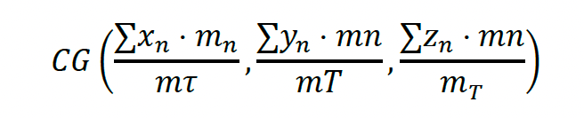

8. Crear gráficos dinámicos para presentar de forma gráfica los datos de una tabla dinámica
Los datos numéricos son la base, pero una representación gráfica puede hacer bastante más
atractiva su presentación y más sencilla la interpretación.
Al tratarse de un gráfico basado en una tabla dinámica, además, es posible rediseñarlo y reconfigurarlo tantas veces como se necesite.
Se puede insertar un gráfico directamente a partir de un rango de datos, mediante la opción Insertar>Gráficos>Gráfico dinámico, o bien tomando como origen una tabla dinámica existente. Aparecerá la galería de tipos de gráficos disponibles (como se ve en la siguiente imagen), se elige el que convenga y el gráfico se insertará en la hoja. También se hará visible el panel de tareas Panel de filtros del gráfico dinámico, así como una serie de fichas adicionales en la Cinta de opciones.
Datos dinámicos
Mostrando la lista de campos, el mismo panel que se usaba para diseñar la tabla dinámica, se puede añadir elementos de página, series de datos, etc., al gráfico, así como moverlos de un punto a otro. Por supuesto, se puede usar las habituales opciones de gráficos para seleccionar el tipo, aspecto, leyendas, etc.
Cualquier dato o modificación que se efectué en el gráfico tendrán un reflejo inmediato en la tabla dinámica, y viceversa. Esto significa que se puede, por ejemplo, añadir un nuevo campo a la tabla dinámica y ver cómo aparece de forma inmediata en el gráfico. El gráfico en sí es dinámico. En la siguiente imagen, por ejemplo, se puede ver un gráfico que muestra la población que habla cada idioma, clasificada por sexos y ámbito (rural o urbano). En ese gráfico concreto se ha elegido, en la lista que hay en la parte superior del panel bajo el título Filtro de informe, representar los datos correspondientes a un cierto idioma. Se puede seleccionar cualquier otro y ver cómo inmediatamente el gráfico se actualiza. Lo mismo es aplicable para las series de datos que, en este caso, son los continentes. Lógicamente, los gráficos dinámicos son dinámicos mientras están en pantalla. Una vez impresos son gráficos corrientes y no es posible efectuar ninguna de las operaciones de selección de datos y configuración.
Gráfico dinámico
8.1 Impresión y visualización de contenidos dinámicos
Uno de los métodos de publicación más habituales es la impresión de la información en papel, hasta tal punto que el consumo de papel, con el advenimiento de la tecnología digital, no ha disminuido, sino que ha aumentado.
Los datos que se desea imprimir pueden seleccionarse previamente, antes de acceder al cuadro de diálogo de opciones de impresión, o bien en ese mismo cuadro de diálogo, según los casos. Si se desea imprimir un cierto rango de celdillas o un gráfico, efectuaría la selección antes de abrir el citado cuadro de diálogo. Las opciones que se encuentran en él, como se aprecia en la siguiente imagen, dependerán de la selección hecha con anterioridad.
Opciones información a imprimir
En la parte superior de esta imagen se puede ver las opciones disponibles cuando en la hoja de cálculo no se ha hecho selección alguna, mientras que la parte inferior corresponde al caso en que se ha seleccionado un gráfico.
Para abrir el cuadro de diálogo de impresión tiene que seleccionar la opción Imprimir>Imprimir, en el menú asociado al Botón de Office. Puede también utilizar la combinación de teclas Control-P para acceder a dicho cuadro de diálogo sin necesidad de recurrir al menú.
Cuando no se ha efectuado una selección, por defecto se imprime todo el contenido de la hoja actual. Utilizando la opción Diseño de página>Configurar página>Área de impresión>Establecer área de impresión puede definir un cierto rango de celdillas como área a imprimir, de tal manera que tan solo se dé salida a la información, ya sean datos o elementos gráficos, que exista en dicha área.
Se debe marcar primero el rango de celdillas a establecer como área de impresión y, a continuación, utilizar la opción mencionada.
8.2 Saltos de página
Es especialmente importante conocer cuándo llegan los saltos de página al trabajar con hojas de cálculo grandes, con muchas columnas y filas, ya que, por defecto, Excel podría hacer las divisiones en el peor de los puntos.
Usando la opción Diseño de página>Configurar página>Imprimir títulos, se puede designar un cierto rango de celdillas, en la parte superior y en la parte izquierda, cuya impresión se repetirá en todas las páginas.
Se supone que es necesario imprimir la hoja que contiene los datos de la población de todos los países del mundo. Ésta es bastante extensa, tanto horizontal como verticalmente, y precisará bastantes páginas, pero se quiere saber de antemano dónde se efectuarán las divisiones. Para ello se selecciona la opción Vista>Vistas de libro>Vista previa de salto de página, a la que también se puede llegar con el tercero de los botones que hay en la parte inferior derecha de la ventana de Excel, mediante los que se alterna entre las vistas normal, de diseño de página y de saltos de página.
Se reduce el tamaño de los datos y aparecen unas gruesas líneas de división, así como unos letreros que indican el número de página.
Hay que tener en cuenta que en una hoja no pueden imprimirse más datos de los que físicamente, por las dimensiones de la hoja y por el tipo de letra de la información, es posible introducir. Por ello, al ajustar los saltos de página, lo más habitual es reducir la información por página, en lugar de intentar ampliarla más allá de los límites posibles.
Si se utiliza la técnica de arrastrar y soltar para mover los saltos de páginas, diseñando así el contenido que tendrá cada una de ellas, de esta forma se puede conseguir, por ejemplo, que cada página contuviese países sólo de un continente. Cuando se desee volver a la vista normal, para continuar trabajando con los datos, se utiliza el primer botón de cambio de vista de la línea de estado o bien elija la opción Vista>Vistas de libro>Normal. En esta vista también podrá apreciar el punto donde existe una división de página, ya que aparece como una línea de guiones entre las celdillas.
Saltos de pagina
8.3 Encabezados y pies
En las páginas impresas también pueden incluirse elementos útiles como: título del informe, la fecha, una numeración de páginas, etc. Estos elementos pueden disponerse en la parte superior de la página, conocida habitualmente como encabezado, o bien en la sección inferior, llamada pie.
La configuración de esas dos secciones es bastante sencilla. Se tiene que hacer clic en el botón Iniciador del cuadro de diálogo del grupo Disposición de página>Configurar página, el pequeño botón que hay en la parte inferior derecha de dicho grupo y que ya se ha utilizado en otras ocasiones. Se abrirá una ventana como la de la siguiente imagen. Se selecciona en ella la página Encabezado y pie de página. En principio no existe contenido alguno en esas secciones. Al introducirlo quedará algo menos de espacio en cada página para la impresión de datos, lo cual podría incrementar el número de páginas utilizadas.
configuración encabezado
Debajo y encima de los paneles que muestran la vista previa del encabezado y pie, respectivamente, existen sendas listas desplegables con algunos modelos predefinidos. Existe más de una docena de modelos para utilizar.
Si ninguno de esos modelos se ajusta a sus preferencias, siempre puede usar el botón Personalizar encabezado o Personalizar pie de página para establecer por sí mismo, manualmente, los parámetros que deben imprimirse. La ventana de personalización cuenta con una serie de botones y tres apartados diferentes. Éstos contendrán los datos a imprimir en la franja izquierda, central y derecha del encabezado o pie.

Ventana personalización
Una alternativa, para la inclusión y edición de encabezado y pies, consiste en activar la vista de diseño de página y hacer clic directamente sobre esas zonas de la página. En la siguiente imagen, por ejemplo, se puede ver cómo está editándose el pie de la primera página, apareciendo algo más abajo en encabezado de la siguiente. Al hacer clic en un pie o encabezado aparece en la Cinta de opciones la ficha Herramientas para encabezado y pie de página>Diseño, que permite incluir todos los elementos antes citados: hora, fecha, número de página, nombre del archivo, imágenes, etc., así como elegir de una galería mucho más amplia de encabezados y pies predefinidos.
Editar pie
Tras dar todos los pasos descritos ya se está en disposición de imprimir los datos seleccionados. Antes se puede ver en pantalla cuál sería el aspecto final de los datos en el panel, lo cual servirá para corregir cualquier detalle de último minuto. Para activar la vista previa se selecciona la opción Imprimir>Vista preliminar del Menú Archivo. En realidad, para establecer todos los parámetros de impresión se puede comenzar abriendo esta vista previa ya que, desde ella, se puede acceder a la configuración de página, encabezados y pies o ajuste de saltos de página. Marcando la opción Mostrar márgenes, como se ha hecho en la siguiente imagen, se podrá adecuar los márgenes superior, inferior, izquierdo y derecho de forma visual, con operaciones de arrastrar y soltar en lugar de introduciendo medidas.
Ventana impresión
8.4 Modificar un gráfico (tamaño, posición, escala)
Cada uno de los elementos dispone de una serie de propiedades. La mayor parte de ellas pueden cambiarse con las opciones que aparecen en los distintos grupos de la ficha Herramientas de gráfico >Formato, desde los títulos del gráfico y rótulos de ejes a la apariencia de la tabla de datos, pasando por las líneas de los ejes, los tributos de área de trazado o las leyendas. También se puede acceder a estas opciones desde el cuadro de diálogo asociado a cada elemento, al que puede acceder desde la opción Dar formato a … que aparece en el menú contextual correspondiente.
La ventana de propiedades de cada uno de los elementos contará con opciones exclusivas o específicas.
Existen algunos grupos que se podría denominar generales: tipo y atributos de letra, colores y rellenos, formato de datos y alineación son algunas de estas propiedades.
Con estas opciones de personalización puede establecer imágenes como fondo del área de trazado, modificar la orientación de los títulos, el color de los datos, etc.
Propiedades de la tabla de datos asociada al gráfico.
El menú contextual del área de gráfico cuenta con algunas opciones adicionales, como Cambiar tipo de gráfico o Seleccionar datos, mediante las cuales se puede acceder a la galería de gráficos y el cuadro de diálogo Seleccionar origen de datos que se utilizan al principio. La personalización del gráfico se reduce a la selección de opciones en el menú emergente de cada elemento y las distintas fichas específicas de Herramientas de gráficos, así de sencillo.
Gráfico tras algunas adaptaciones.
8.5 Áreas del gráfico
Cualquier gráfico generado por Excel cuenta siempre con una serie de elementos comunes, cada uno de los cuales puede personalizarse de manera individual.
Esos elementos aparecen todos en el interior de lo que se denomina área del gráfico, que es la zona delimitada por el recuadro más exterior, separando el propio gráfico de los datos de la hoja de cálculo.
La siguiente figura muestra un gráfico de ejemplo con la población mundial de diferentes años. Dentro del área del gráfico se tienen tres títulos: uno general, asociado al gráfico, y dos correspondientes a los ejes de valores y categorías, nombres con los que se conoce al eje vertical y horizontal, respectivamente. También puede verse, bajo el título de categorías, una leyenda que indica la información representada en la única serie de datos.
Elementos que componen un gráfico en Excel
El área de trazado es el fondo sobre el cual se dibujarán las series de datos, en este caso concreto en forma de línea. En el interior del área de trazado se dispone también de líneas de división, tanto verticales como horizontales y en dos niveles distintos. Por último, debajo del área de trazado y el eje de categorías, se puede ver una tabla de datos. El gráfico cuenta con una única serie de datos, pero se podría disponer varias y cada una de ellas aparecería como una línea distinta, posiblemente con otro color o tipo de trazado. Cada serie tendría asociada una leyenda y sus respectivas entradas en la tabla de datos, aunque compartirían el resto de los elementos: ejes de valores y categorías, títulos, área de trazado, etc.
Se puede seleccionar cualquier área del gráfico haciendo clic sobre ella con el botón principal del ratón. También se puede utilizar la lista desplegable que hay en la parte superior de Herramientas de gráficos>Selección actual.